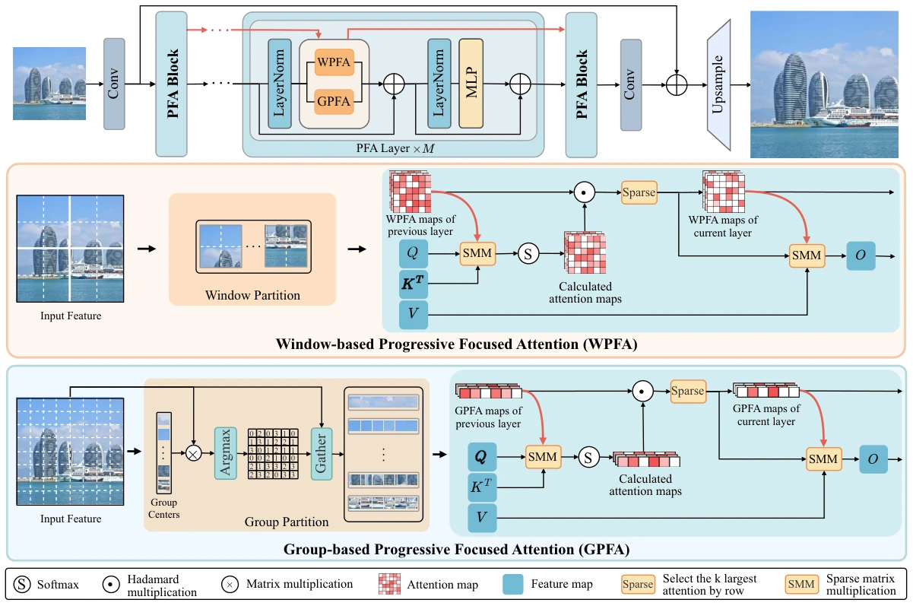

Progressive Focused Transformer for Image Restoration
Progressively focused attention combines local and global contexts for a broad range of image restoration tasks.
Paper
BibTeX
@article{pftv22026,
title={{Progressive Focused Transformer for Image Restoration}},
author={Long, Wei and Zhang, Jinhua and Zhou, Xingyu and Zhang, Leheng and Gu, Shuhang},
journal={International Journal of Computer Vision},
year={2026},
volume={134},
number={10},
pages={458},
doi={10.1007/s11263-026-03053-1},
url={https://doi.org/10.1007/s11263-026-03053-1}
}